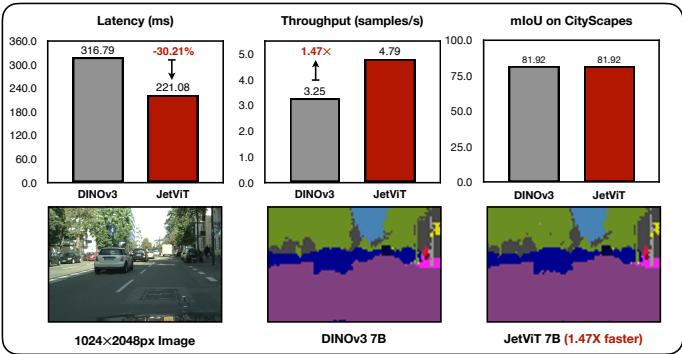

Figureure 2 · Post-Training Attention Search PipelineFigure 2. Post-Training Attention Search Pipeline. Our Post-Training Attention Search begins with a pre-trained full-attention Vision Transformer. We first search for the optimal combination of linear and window-attention blocks, producing an efficient ViT with O(N) complexity while retaining most of the performance of the original full-attention model. To close the gap in accuracy, we then perform a search to reintroduce a minimal number of full-attention blocks. The resulting hybrid ViT combines linear, window, and full-attention blocks, achieving accuracy comparable to the original model while delivering substantial speedups.这张图概括 JetViT 的整体方法流程。阅读时先看模块之间传递的训练信号，再看作者如何把目标拆成可优化的子问题。

Figureure 1 · JetViT- Efficient Hybrid Attention Vision TransformersFigure 1. JetViT- Efficient Hybrid Attention Vision Transformers. We transform state-of-the-art full-attention vision foundation models (e.g., DepthAnything, DINOv3) into efficient hybrid attention models using our cost-effective Post-Training Attention Search. On DepthAnythingV2 models [49], JetViT achieves a 1.79× increase in throughput and a 44.81% reduction in latency without any loss in accuracy. On DINOv3 models [37], JetViT provides a 1.47× throughput speedup and a 30.21% latency reduction while maintaining comparable segmentation performance. All latency and throughput measurements are reported on an NVIDIA H100 GPU.这张图/表用于判断 JetViT 的实验收益来自哪里。重点看替换、消融或跨模型设置下趋势是否一致，而不是只看单个最高分。